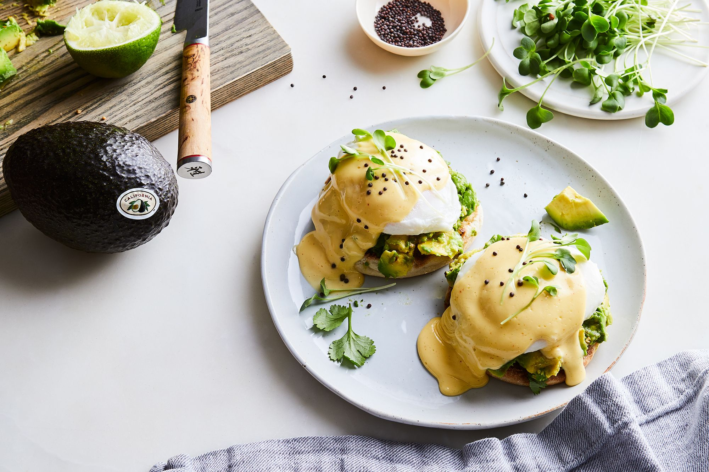

For the Avocado Toast Benedict:
For the hollandaise:
Bring a shallow saucepan of water to boil.
Step 2Meanwhile, make the smashed avocado: Remove the avocado skin and pit, then roughly chop. Lightly smash to incorporate lime, cilantro, and spices. Add salt and pepper, to taste.
Step 3Split and toast the English muffins. Arrange each on a plate and top with smashed avocado.
Step 4When the water has reached a rolling boil, poach the eggs. Remove from the water and pat dry before placing each on an avocado-topped english muffin.
Step 5Top each egg with the hollandaise, a sprinkle of mustard seeds, and the microgreens.
Melt the butter on the stove or in the microwave until piping hot.
Step 2Warm the blender bowl by filling with hot water and then emptying and drying the bowl.
Step 3Add the egg yolks, lemon juice, cayenne, salt, white pepper and mustard and blend at medium speed. Slowly drizzle in the hot melted butter with the machine still running until emulsified.